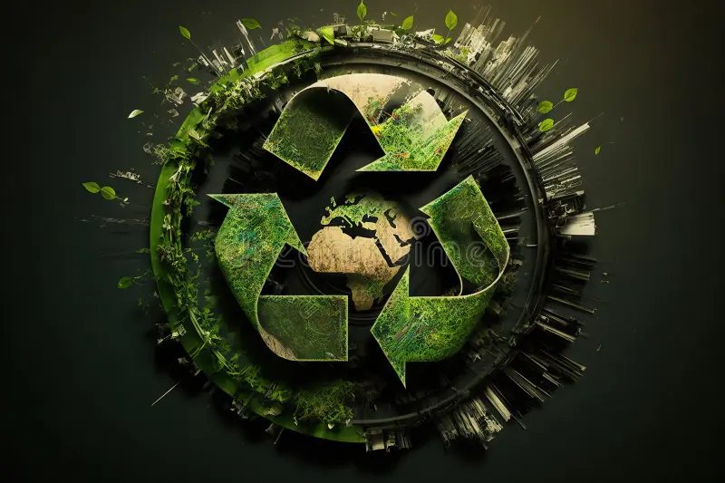
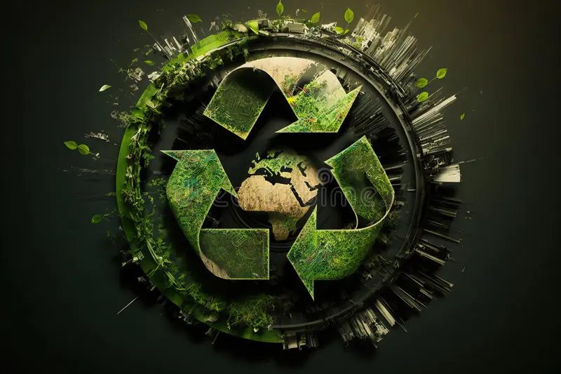

VIDA TERRESTRE
Todos os tipos de ecossistemas podem ser restaurados, a restauração pode ocorrer de várias maneiras, como o plantio ativo ou a remoção de pressões para que a natureza possa se recuperar por si mesma. Buscamos proteger, recuperar e promover o uso sustentável dos ecossistemas terrestres, gerir de forma sustentável as florestas, combater a desertificação, deter e reverter a degradação da terra e deter a perda de biodiversidade.
Vamos falar mais sobre o ecossistema:
Os ecossistemas podem ser terrestres ou aquáticos.
São compostos de fatores bióticos e fatores abióticos.
Sua composição é feita por organismos produtores, consumidores e decompositores.
Seus componentes interagem de forma dinâmica.
Ecossistema e bioma não são sinônimos.
 

O que é o desmatamento?
O desmatamento é caracterizado pela remoção da vegetação nativa de uma área. A sua causa está atrelada principalmente à ação antrópica, ou seja, à atuação do homem no desenvolvimento das atividades produtivas.
Consequências do desmatamento:
Entre as principais consequências do desmatamento, podemos destacar: Instabilidade econômica e ambiental. Áreas como florestas e matas são fontes diretas de matérias-primas, combustível e medicamentos; portanto, a longo prazo, a falta de tais recursos também pode levar à instabilidade econômica e ambiental.
Como solucionar esse problema?
Plante árvores em seu jardim ou em locais públicos, como praças, canteiros e parques, para ajudar a aumentar a cobertura florestal, tornar o ar mais puro e fornecer abrigo para a fauna local. Compre produtos reciclados: compre produtos feitos com materiais reciclados e incentive a economia circular.
Como fazer para preservar o meio ambiente?
- Economize energia
- Reduza o consumo de plástico
- Economize papel
- Evite jogar papel na rua
- Recicle ou reaproveite tudo o que puder
- Não contribua com a poluição sonora e visual
CONCLUSÃO
O desmatamento é um dos mais graves problemas ambientais do nosso tempo. Além de devastar as florestas e os recursos naturais, elecompromete o equilíbrio do planeta em seus diversos elementos, incluindo os ecossistemas, afetando gravemente também a economia e a sociedade.